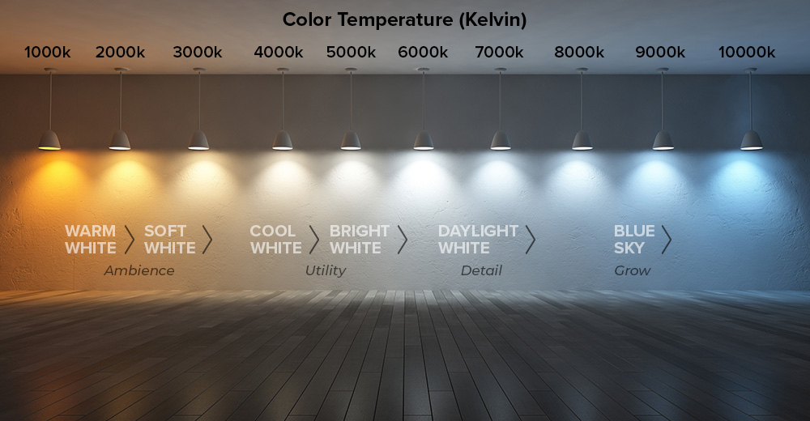

Understanding Color Temperature
Understanding Color TemperatureColor Temperature - Things to consider
Many folks used to old bulbs that used incandescent/halogen/fluorescent technology to operate may not be aware of exactly what color temperature is, as things like standard house bulbs weren't sold making much mention to this.
Color temperature is a measurement used to describe the hue of a specific type of light source, expressed in degrees Kelvin (K). It relates to the visual warmth or coolness of the light emitted by a source, and it plays a crucial role in various fields, including photography, film, interior design, and general lighting design. The dawning of LEDs has made it possible to have the same light come in a variety of color temperatures to meet any wants or needs of the buyer.
- The Nostalgia Zone (Below 2700K): Bulbs in this area of color temperature typically exist to replicate the look of some of the first light bulbs invented or a similar design. Original Edison bulbs would have been somewhere around 2200K-2400K. Candlelight itself lies around 1900K-2200K.
- Warm White (2700K - 3000K): Similar to traditional incandescent bulbs, this light has a cozy, inviting feel often used in homes. Incandescent bulbs typically were 2700K, while halogen burned a bit hotter, and emitted light closer to 3000K. If you've ever purchased something like GE's Relax™ lineup of LED bulbs, popular on department store shelves, these are all in 2700K.
- Neutral White (3500K - 4100K): A balance between warm and cool, suitable for kitchens and bathrooms.
- Cool White (5000K - 6500K): Mimics daylight and has a bluish tint, often used in offices and retail spaces to promote alertness and focus. 
Perception Can Be Reality!
Warm light(low Kelvin) is generally perceived as comforting and is often used in residential settings to create inviting atmospheres. It can reduce visual fatigue and create a relaxing environment.
Cool light (high Kelvin) tends to be more energizing and is preferred for work environments where clarity and concentration are essential.
The choice of color temperature can significantly affect mood and perception in a space. For instance, restaurants might favor warmer lighting to create a comfortable dining experience, while hospitals may use cooler lighting for a more sterile and alert environment.